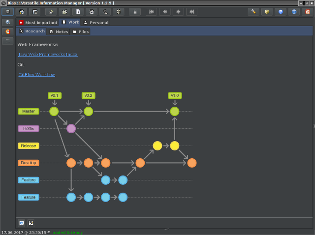

DarculaSkin
add-on for Bias provided by
R. Kasianenko
, an author of Bias application.
It uses
Darcula
- a Look-n-Feel for Java desktop application and a theme for code editors, provided by
Konstantin Bulenkov
.
Preview:
